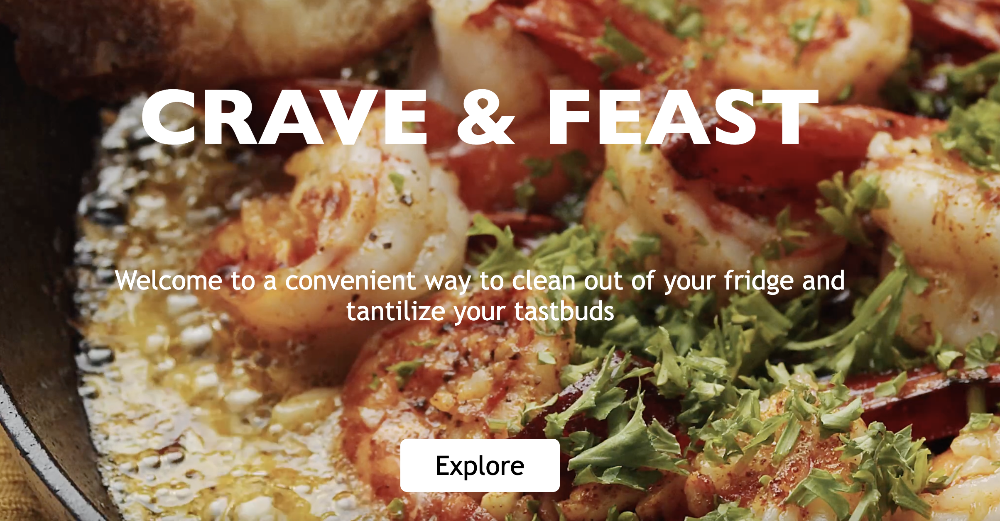
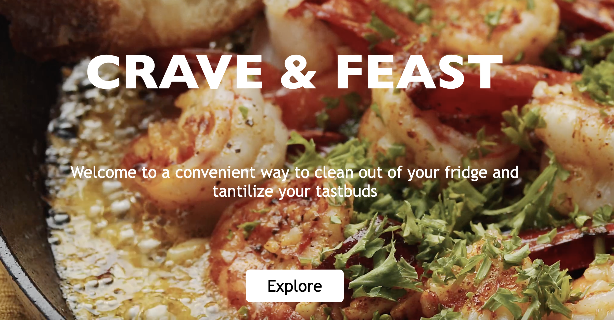

Crave & Feast
Primary Capital
Weather App
Inspiration Board
I'm pivoting from a healthcare field and special education background into software development. I previously worked as an occupational therapist, where I spearheaded functional skills-based initiatives for marginalized differently-abled clients in the school and psychiatry settings. My interest in software development was sparked when assisting clients in using assistive devices to access websites/apps. I am currently enrolled at Ada Developer Academy C18 cohort as a full-stack software developer student. I am impact-driven team leader with strong communication and problem-solving skills. I'm interested in making technology more accessible for people of all abilities. I want to find an opportunity where I can process improvement, promote positive community experiences, take on challenges, and continue learning. You can connect with me here. You can also view my resume here.
Pivoting from a healthcare field and special education background into software development. I previously worked as an occupational therapist, where I spearheaded functional skills-based initiatives for marginalized differently-abled clients in the school and psychiatry settings. My interest in software development was sparked when assisting clients in using assistive devices to access websites/apps. I am currently enrolled at Ada Developer Academy C18 cohort as a full-stack software developer student. I am impact-driven team leader with strong communication and problem-solving skills. I'm interested in making technology more accessible for people of all abilities. I want to find an opportunity where I can process improvement, promote positive community experiences, take on challenges, and continue learning.
Crave & Feast
Primary Capital
Weather App
Inspiration Board